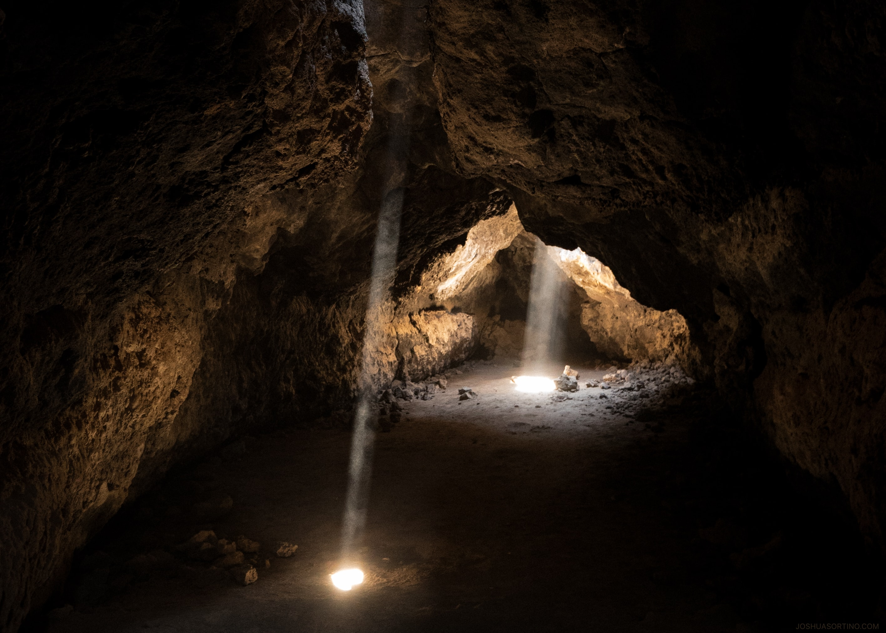
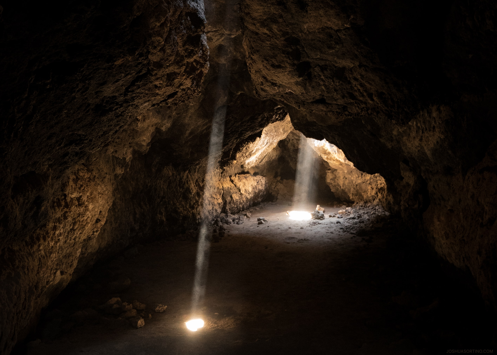
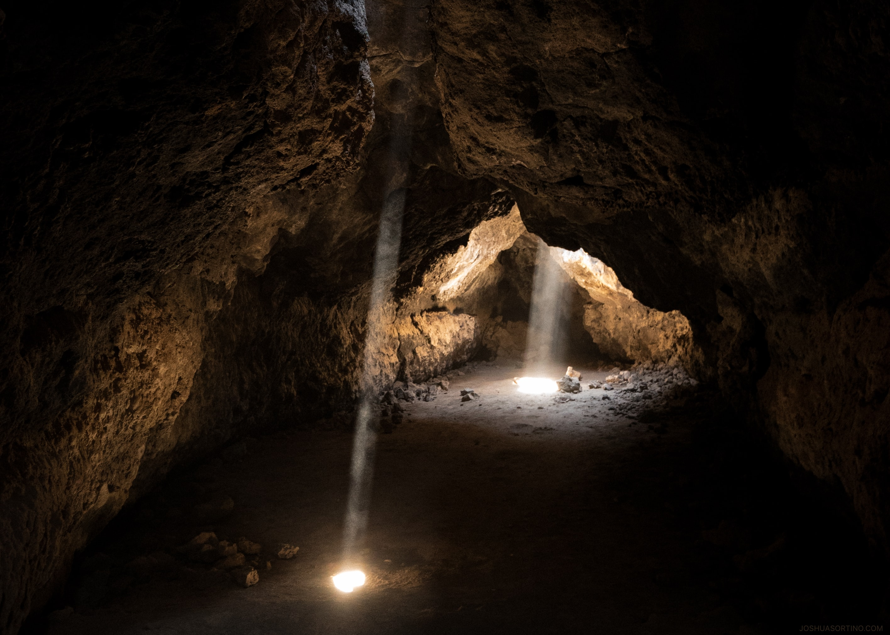

About my Hometown...
Home Page
Interesting things
There are many cool things about my hometown that people tend to look over.
Some, for instance:
Dunbar Cave
(Attraction)
Annual
Riverfest
Roxy Theater

 
